|
ITESM Campus Querétaro TC1004B - Implementation of the Internet of Things Abril Odette Jiménez Sánchez | A01715095 |
← BACK TO MAIN PAGE |
Mostla | Tecnologías para la Educación
October 13 · Campus Querétaro
The future at your fingertips
Mostla is the Emerging Educational Technologies team of Tecnologías para la Educación at Tecnológico de Monterrey. Its name comes from the Nahuatl word for “tomorrow”, and it works as an experiential learning space where professors and students can get to know and interact with disruptive technologies and use them to innovate in their own fields. You can read more on the official site.
Mostla keeps an eye on the technologies that are changing education, such as artificial intelligence (including tools like Tec GPT), virtual and augmented reality through the XR Zones, 3D printing, blockchain, biometrics, cloud computing, telepresence and the metaverse. As we will see, many of these appeared in the activities of Mostla Day.
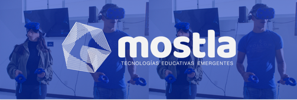
|
Mostla Day on campus had a very interesting agenda. We could see many different kinds of activities that are key to understanding our access to technology. Personally, I was interested in the talks and workshops Vibe Coding, Layer by Layer: Printing the Future, the Technology Entrepreneurship Fair, Painting 3D-Printed Miniatures, Master the Magic of Canva AI, Total Immersion and Gravity Sketch: Prototyping the Future. |
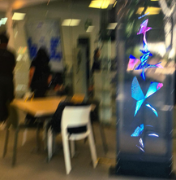 |
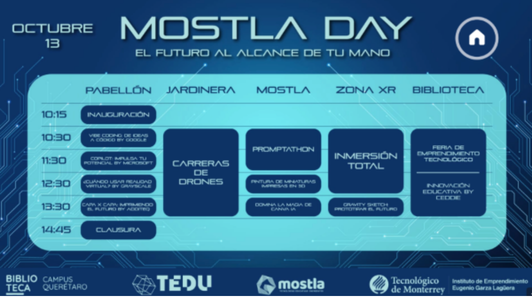
Official agenda of Mostla Day, October 13.
| Date and time | October 13, from 10:15 to 14:45 according to the official agenda (registration started at 10:00 AM). |
| Places | Five spaces on campus: the Pabellón, the Jardinera, Mostla, the XR Zone and the Library. |
| Activities | 14 scheduled activities, from talks and workshops to drone races and a promptathon. |
| Organized by | MOSTLA and the BiblioTECa at Campus Querétaro, with talks led by partners such as Google, Microsoft, Grayscale, Additeq and Ceddie. |
The inauguration began with the presentation of several guests, including our campus director and some department directors. They introduced the Mostla initiative and its meaning, and gave us the information we needed to live Mostla Day fully and make the most of the conferences, activities and awards available.
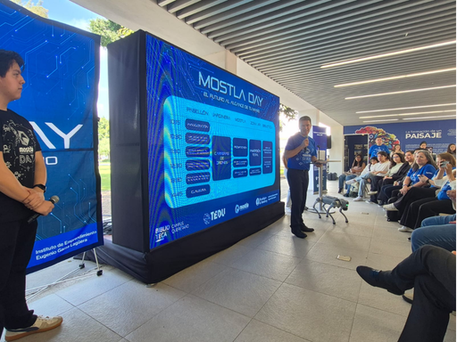
As part of my participation in this event, I took part in three different ways.
|
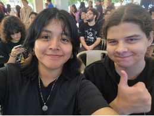 |
I took part as student staff in the campus XR Zone. Since we work closely with the event, we served as staff during the day, attending the inauguration and supporting the activities where our help was needed, such as the VR Zone. In this role I helped everyone who wanted to try a VR experience: I explained how to use the equipment and the available applications, answered questions and sparked interest so that visitors would not leave without trying it. |
|
Among the activities in the VR zone, I was able to experiment with the equipment we have on campus. I had been using it for much of the semester, so it was not completely new to me, but I enjoyed trying applications I had never used before and having to learn them so I would be ready when someone needed help. I was also in charge of making sure all the controllers were set up and working properly, and that the monitors showed each user's broadcast. |
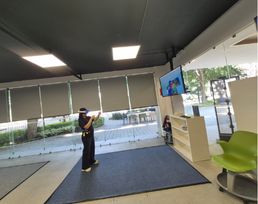 |
|
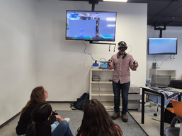 |
One of the most interesting activities was the Gravity Sketch workshop, focused on prototyping. It was led by a professor with ten years of experience using the application, who showed us all of its tools and the possibilities it offers, as well as its uses in industry, its importance and even its limitations. Afterwards, I had the chance to try the app myself and create whatever came to mind in the moment. |
|
I also won two event T-shirts, a speaker and a Mostla notebook. I was hoping to get a TecBot plush toy, which was one of the prizes too, but they ran out just before it was my turn to claim my prizes. |
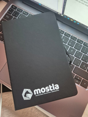 |
At the closing ceremony, the organizers thanked us and our guests for taking part. They encouraged us to see this day not as our only experience but as a beginning, and promised more events like it and more opportunities.
|
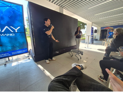 |
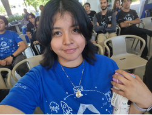 |
“The future is here, and we are the ones who make it.”
|
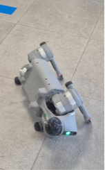 |
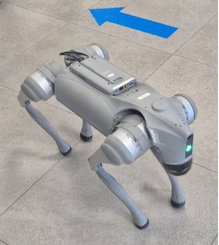 |
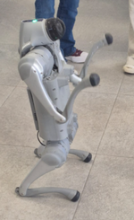 |
My school: Tecnológico de Monterrey
Contact me on WhatsApp: Say hello!
Send me an email: A01715095@tec.mx